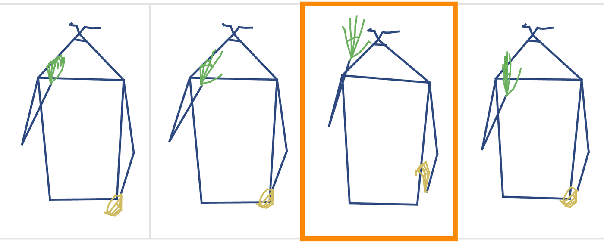
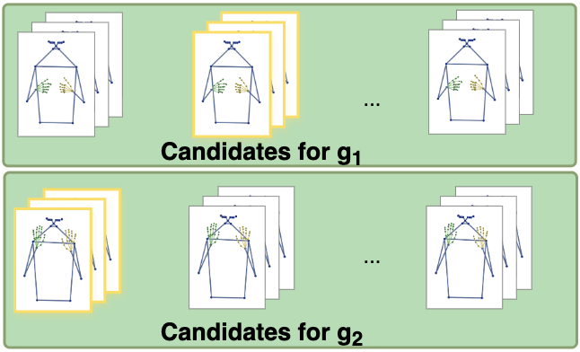
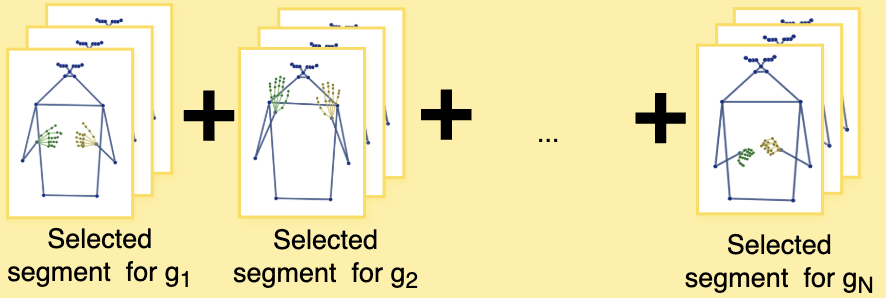
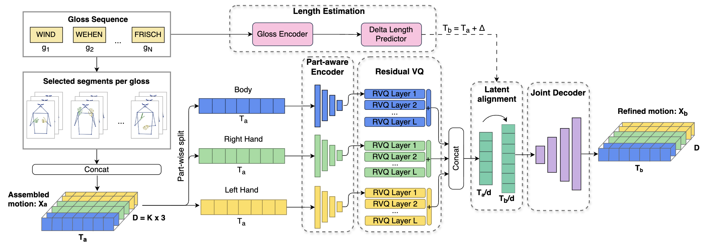
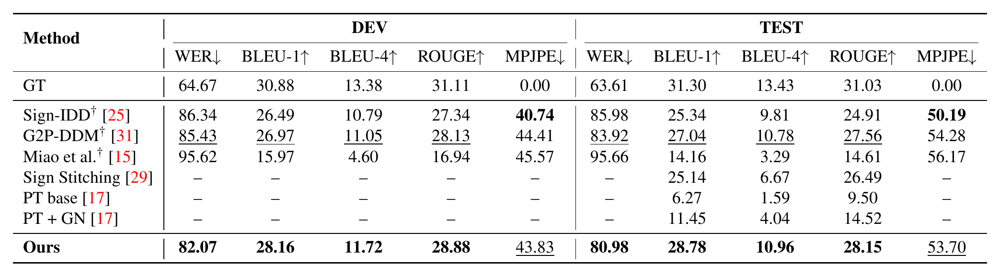
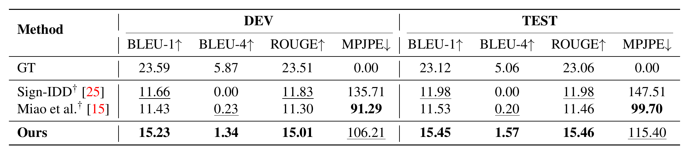
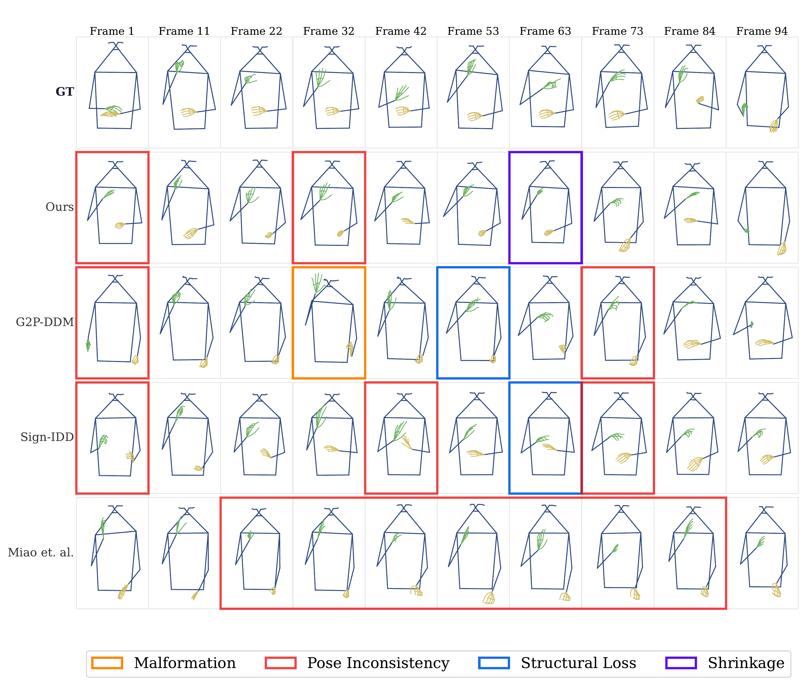
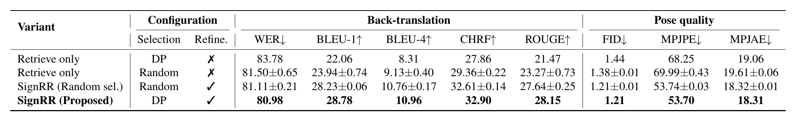
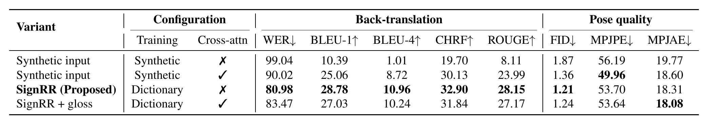

BMVC 2026
Sign language production (SLP) aims to generate continuous signing motion from spoken language, often through gloss-to-pose generation. Prior work mainly follows two paradigms. Generative models synthesize motion from a learned prior or from noise, without reference to an observed signing instance, making rare hand configurations and signer-specific articulation difficult to preserve. Retrieval-based methods reuse real, well-articulated motion segments, but concatenating segments from different signers and co-articulation contexts can introduce rhythm and style inconsistencies across the full sequence, not only at segment boundaries. These limitations suggest a complementary solution: use retrieval to provide realistic articulation, and use learned refinement to impose the global coherence that retrieval alone lacks. We therefore propose retrieve-and-refine, a paradigm that starts from real retrieved motion and refines it into a globally coherent signing sequence rather than generating motion from scratch. Our framework, SignRR, initializes motion from a dictionary of real sign segments and refines the full sequence with a part-aware Residual VQ-VAE, where residual quantization preserves fine hand articulation and temporal length differences are handled in the latent space. Experiments on PHOENIX14T and CSL-Daily show that SignRR achieves state-of-the-art back-translation performance while maintaining competitive pose quality.
Three-minute summary for BMVC 2026.
Motivation
(a) Generative. Synthesize every frame with a learned model
motion from a learned prior or noise
Malformation

Paper: results for G2P-DDM
(b) Retrieval. Look up real segments and concatenate them
Gloss-motion dictionary

real segments from training data

One real segment per gloss, concatenated
Generative models synthesize every frame from a learned prior or from noise. The motion is coherent, but hand shapes are often averaged or malformed.
Retrieval looks up one real segment per gloss and concatenates them. The hands are real, but segments from different signers and speeds break the rhythm of the sentence.
Method

Real segments
One per gloss, selected from the gloss-motion dictionary for smooth boundaries.
Part-aware residual VQ
Body and hands are encoded separately, keeping fine hand detail.
Length alignment
The model predicts the target length; a joint decoder outputs the refined motion.
Dictionary. Built from the training split, with gloss boundaries estimated by CorrNet+.
Training. The refiner learns to turn random assemblies of real segments into continuous signing.
Results


Back-translation. A translation model trained on real poses reads the generated poses (WER, BLEU, ROUGE). MPJPE: joint position error.
PHOENIX14T. Best on all back-translation metrics; BLEU-4 rises from 6.67 (Sign Stitching, a retrieval method) to 10.96.
CSL-Daily. Best BLEU-1, BLEU-4 and ROUGE.
Speed. 87.8 ms per sequence on one A100, about 25× faster than G2P-DDM.
Qualitative results

Analysis


Selection vs. refinement. Retrieval alone reaches BLEU-1 22.06; refining the same assembly raises it to 28.78.
Without retrieval. Trained on synthetic motion, the refiner reaches BLEU-1 10.39, or 25.06 with cross-attention to the glosses.
Robustness. Perturbing gloss boundaries by up to ±16 frames lowers BLEU-4 by at most 0.42.
Takeaway: most of the gain comes from refinement, and it works best on real retrieved motion.
@inproceedings{titocruz2026signrr,
title = {SignRR: Retrieve and Refine Real Motion for Sign Language Production},
author = {Tito Cruz, Fidel Omar and Sanchez Marquina, Angie and Farfan, Summy and Bejarano, Gissella},
booktitle = {Proceedings of the British Machine Vision Conference (BMVC)},
year = {2026}
}